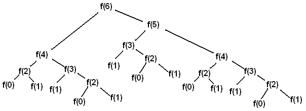

Discussion 3: Recursion, Tree Recursion
Getting Started
If you could change one historic event, what would it be? And what would you make happen instead?
Recursion
Ok, time to discuss problems! Remember to work together. Everyone in the group should understand a solution before the group moves on. Many students find this discussion challenging. Everything gets easier with practice. Feel free to consult the introduction/notes dropdown below if you need a refresher!
VERY IMPORTANT: In this discussion, don't check your answers until your whole group is sure that the answer is right. Figure things out and check your work by thinking about what your code will do. Your goal should be to have all checks pass the first time you run them! If you need help, ask.
Let's look at the canonical example, factorial.
Factorial, denoted with the
!operator, is defined as:n! = n * (n-1) * ... * 1For example,
5! = 5 * 4 * 3 * 2 * 1 = 120
The recursive implementation for factorial is as follows:
def factorial(n):
if n == 0:
return 1
return n * factorial(n - 1)We know from its definition that 0! is 1. Since n == 0 is the smallest number we
can compute the factorial of, we use it as our base case.
The recursive step also follows from the definition of factorial, i.e., n! =
n * (n-1)!.
Recursive functions have three important components:
Base case. You can think of the base case as the case of the simplest function input, or as the stopping condition for the recursion.
In our example,
factorial(0)is our base case for thefactorialfunction.Recursive call on a smaller problem. You can think of this step as calling the function on a smaller problem that our current problem depends on. We assume that a recursive call on this smaller problem will give us the expected result; we call this idea the "recursive leap of faith".
In our example,
factorial(n)depends on the smaller problem offactorial(n-1).Solve the larger problem. In step 2, we found the result of a smaller problem. We want to now use that result to figure out what the result of our current problem should be, which is what we want to return from our current function call.
In our example, we can compute
factorial(n)by multiplying the result of our smaller problemfactorial(n-1)(which represents(n-1)!) byn(the reasoning being thatn! = n * (n-1)!).
The next few questions in lab will have you writing recursive functions. Here are some general tips:
- Paradoxically, to write a recursive function, you must assume that the function is fully functional before you finish writing it; this is called the recursive leap of faith.
- Consider how you can solve the current problem using the solution to a simpler version of the problem. The amount of work done in a recursive function can be deceptively little: remember to take the leap of faith and trust the recursion to solve the slightly smaller problem without worrying about how.
- Think about what the answer would be in the simplest possible case(s). These will be your base cases - the stopping points for your recursive calls. Make sure to consider the possibility that you're missing base cases (this is a common way recursive solutions fail).
- It may help to write an iterative version first.
Q1: Warm Up: Recursive Multiplication
These exercises are meant to help refresh your memory of the topics covered in lecture.
Write a function that takes two numbers m and n and returns their product.
Assume m and n are positive integers. Use recursion, not mul or *.
Hint:
5 * 3 = 5 + (5 * 2) = 5 + 5 + (5 * 1).
For the base case, what is the simplest possible input for multiply?
If one of the inputs is one, you simply return the other input.
For the recursive case, what does calling multiply(m - 1, n) do?
What does calling multiply(m, n - 1) do? Do we prefer one over the other?
The first call will calculate a value that is n less than the total,
while the second will calculate a value that is m less.
Either recursive call will work, but only multiply(m, n - 1) is used
in this solution.
def multiply(m, n):
"""Takes two positive integers and returns their product using recursion.
>>> multiply(5, 3)
15
"""
if n == 1:
return m
else:
return m + multiply(m, n - 1)
Q2: Swipe
Implement swipe, which prints the digits of argument n, one per line, first backward then forward. The left-most digit is printed only once. Do not use while or for or str. (Use recursion, of course!)
def swipe(n):
"""Print the digits of n, one per line, first backward then forward.
>>> swipe(2837)
7
3
8
2
8
3
7
"""
if n < 10:
print(n)
else:
print(n % 10)
swipe(n // 10)
print(n % 10)
print the first line of the output, then make a recursive call, then print the last line of the output.
Q3: Skip Factorial
Define the base case for the skip_factorial function, which returns the product of every other positive integer, starting with n.
def skip_factorial(n):
"""Return the product of positive integers n * (n - 2) * (n - 4) * ...
>>> skip_factorial(5) # 5 * 3 * 1
15
>>> skip_factorial(8) # 8 * 6 * 4 * 2
384
"""
if n <= 2:
return n
else:
return n * skip_factorial(n - 2)n is even, then the base case will be 2. If n is odd, then the base case will be 1. Try to write a condition that handles both possibilities.
The ability to describe your own code to others is very important! Practice by explaining the logic of your solution and your thought process when coding with your group.
Q4: Recursive Hailstone
Recall the hailstone function from Homework 1.
First, pick a positive integer n as the start. If n is even, divide it by 2.
If n is odd, multiply it by 3 and add 1. Repeat this process until n is 1.
Complete this recursive version of hailstone that prints out the values of the
sequence and returns the number of steps.
def hailstone(n):
"""Print out the hailstone sequence starting at n,
and return the number of elements in the sequence.
>>> a = hailstone(10)
10
5
16
8
4
2
1
>>> a
7
>>> b = hailstone(1)
1
>>> b
1
"""
print(n)
if n % 2 == 0:
return even(n)
else:
return odd(n)
def even(n):
return 1 + hailstone(n // 2)
def odd(n):
if n == 1:
return 1
else:
return 1 + hailstone(3 * n + 1)
even always makes a recursive call to hailstone and returns one more than the length of the rest of the hailstone sequence.
An odd number might be 1 (the base case) or greater than one (the recursive case). Only the recursive case should call hailstone.
Tree Recursion
For example, this is the Virahanka-Fibonacci sequence:
0, 1, 1, 2, 3, 5, 8, 13, ....
Each term is the sum of the previous two terms. This tree-recursive function calculates the nth Virahanka-Fibonacci number.
def virfib(n):
if n == 0 or n == 1:
return n
return virfib(n - 1) + virfib(n - 2)Calling virfib(6) results in a call structure that resembles
an upside-down tree (where f is virfib):

Each recursive call f(i) makes a call to f(i-1) and a call to f(i-2).
Whenever we reach an f(0) or f(1) call, we can directly return 0 or 1
without making more recursive calls. These calls are our base cases.
A base case returns an answer without depending on the results of other calls. Once we reach a base case, we can go back and answer the recursive calls that led to the base case.
As we will see, tree recursion is often effective for problems with branching choices. In these problems, you make a recursive call for each branching choice.
Q5: Count Stair Ways
Imagine that you want to go up a flight of stairs that has n steps,
where n is a positive integer.
You can take either one or two steps each time you move. In how many ways can you go up the entire flight of stairs?
You'll write a function count_stair_ways to answer this question.
Before you write any code, consider:
- How many ways are there to go up a flight of stairs with
n = 1step? What aboutn = 2steps? Try writing or drawing out some other examples and see if you notice any patterns.
Solution: When there is only one step, there is only one way to go up. When there are two steps, we can go up in two ways: take a single 2-step, or take two 1-steps.
- What is the base case for this question? What is the smallest input?
Solution:
We actually have two base cases! Our first base case is when there is one step left.
n = 1 is the smallest input because 1 is the smallest positive integer.
Our second base case is when there are two steps left.
The primary solution (found below) cannot solve count_stair_ways(2) recursively because count_stair_ways(0) is undefined.
(virfib has two base cases for a similar reason: virfib(1) cannot be solved recursively because virfib(-1) is undefined.)
Alternate solution: Our first base case is when there are no steps left. This means we reached the top of the stairs with our last action.
Our second base case is when we have overstepped. This means our last action was invalid; in other words, we took two steps when only one step remained.
- What do
count_stair_ways(n - 1)andcount_stair_ways(n - 2)represent?
Solution:
count_stair_ways(n - 1) is the number of ways to go up n - 1 stairs. Equivalently, count_stair_ways(n - 1) is the number of ways to go up n stairs if our first action is taking one step.
count_stair_ways(n - 2) is the number of ways to go up n - 2 stairs. Equivalently, count_stair_ways(n - 2) is the number of ways to go up n stairs if our first action is taking two steps.
Now, fill in the code for count_stair_ways:
def count_stair_ways(n):
"""Returns the number of ways to climb up a flight of
n stairs, moving either one step or two steps at a time.
>>> count_stair_ways(1)
1
>>> count_stair_ways(2)
2
>>> count_stair_ways(4)
5
"""
if n == 1:
return 1
elif n == 2:
return 2
return count_stair_ways(n-1) + count_stair_ways(n-2)
def count_stair_ways_alt(n):
"""Returns the number of ways to climb up a flight of
n stairs, moving either 1 step or 2 steps at a time.
>>> count_stair_ways_alt(4)
5
"""
if n == 0:
return 1
elif n < 0:
return 0
return count_stair_ways_alt(n-1) + count_stair_ways_alt(n-2)You can use Recursion Visualizer to step through the call structure of count_stair_ways(4) for the primary solution.
Submit Attendance
You're done! Excellent work this week. Please be sure to ask your section TA for the attendance form link and fill it out for credit. (one submission per person per section).
Extra Challenge
You'll need your whole discussion group for this question. At least try it out. You might have fun.
Q6: Sevens
The Game of Sevens: Players in a circle count up from 1 in the clockwise direction. (The starting player says 1, the player to their left says 2, etc.) If a number is divisible by 7 or contains a 7 (or both), switch directions. Numbers must be said on the beat at 60 beats per minute. If someone says a number when it's not their turn or someone misses the beat on their turn, the game ends.
For example, 5 people would count to 20 like this:
Player 1 says 1
Player 2 says 2
Player 3 says 3
Player 4 says 4
Player 5 says 5
Player 1 says 6 # All the way around the circle
Player 2 says 7 # Switch to counterclockwise
Player 1 says 8
Player 5 says 9 # Back around the circle counterclockwise
Player 4 says 10
Player 3 says 11
Player 2 says 12
Player 1 says 13
Player 5 says 14 # Switch back to clockwise
Player 1 says 15
Player 2 says 16
Player 3 says 17 # Switch back to counterclockwise
Player 2 says 18
Player 1 says 19
Player 5 says 20Play a few games. Post the highest score your group reached on Discord.
Then, implement sevens which takes a positive integer n and a number of
players k. It returns which of the k players says n. You may call
has_seven.
An effective approach to this problem is to simulate the game, stopping on turn
n. The implementation must keep track of the final number n, the current
number i, the player who will say i, and the current direction that
determines the next player (either increasing or decreasing). It works well to
use integers to represent all of these, with direction switching between 1
(increase) and -1 (decreasing).
def sevens(n, k):
"""Return the (clockwise) position of who says n among k players.
>>> sevens(2, 5)
2
>>> sevens(6, 5)
1
>>> sevens(7, 5)
2
>>> sevens(8, 5)
1
>>> sevens(9, 5)
5
>>> sevens(18, 5)
2
"""
def f(i, who, direction):
if i == n:
return who
if i % 7 == 0 or has_seven(i):
direction = -direction
who = who + direction
if who > k:
who = 1
if who < 1:
who = k
return f(i + 1, who, direction)
return f(1, 1, 1)
def has_seven(n):
if n == 0:
return False
elif n % 10 == 7:
return True
else:
return has_seven(n // 10)First check if i is a multiple of 7 or contains a 7, and if so, switch
directions. Then, add the direction to who and ensure that who has not
become smaller than 1 or greater than k.
Q7: Karel the Robot
Karel the
robot
starts in the corner of an n by n square for some unknown
number n. Karel responds to only four functions:
move()moves Karel one square forward if there is no wall in front of Karel and errors if there is.turn_left()turns Karel 90 degrees to the left.front_is_blocked()returns whether there is a wall in front of Karel.front_is_clear()returns whether there is no wall in front of Karel.
Implement a main() function that will leave Karel stopped halfway in the
middle of the bottom row. For example, if the square is 7 x 7 and Karel starts
in position (1, 1), the bottom left, then Karel should end in position (1, 4)
(three steps from either side on the bottom row). Karel can be facing in any
direction at the end. If the bottom row length is even, Karel can stop in either
position (1, n // 2) or (1, n // 2 + 1).
Important You can only write if or if/else statements and function
calls in the body of main(). You may not write assignment statements, def
statements, lambda expressions, or while/for statements.